You run Claude Code, Codex or Copilot on your machine. Your teammates join with a link — no install, no API key. Everyone sees the same conversation, and nothing is sent to the model until the group agrees.

A real recording — the demo is generated by driving the actual binary, so it cannot drift from the tool.
What a teammate sees. Open the link, type a name, join in the browser — nothing installed — then propose and vote.
You run one command. It finds whichever coding CLI you already pay for and starts a shared session.
You paste the link in chat. Teammates click it and get a seat in the browser — nothing installed, no key.
Anyone suggests, the group agrees. Type to propose, /y to approve. Then it reaches the model.
Been sent a link and not a programmer? Here is the two-minute version — you click the link, type your name, and vote. Nothing to install.
In a shared room, what you type is a proposal, not a message. It goes on the table with a vote attached. That one change is the whole idea.
alice ❯ make the retry logic exponential ▸ #4 alice proposes [1/3 ✓ · 2 pending · 41s left] /y #4 /n #4 bob ❯ /n #4 not before the release ✗ #4 rejected — vetoed: not before the release
Six ways for a room to decide, from open to unanimous. A veto
carries a reason, and the reason is recorded with the decision.
| Preset | Ships when |
|---|---|
pair | everyone consents, 20s timer, any veto stops it |
team | a majority, plus veto |
strict | unanimous, no timers, no assumptions |
Three of them are the room deciding what the agent may do. The fourth is the agent asking the room — which turns out to be the one that was missing.
Every message is agreed before the model ever sees it. Amend it and the votes reset, because consent was given to different words.
The room can vote on the model's own tool calls. A declined tool is a decision, not an error — the model is told to explain what it would have done.
Race one prompt across parallel git worktrees, then vote on the diffs. Approving one merges it; the branches nobody took are kept, never deleted.
The agent stops at a real fork and asks, before spending the work. “Must v1 keep working?” is a decision, not a fact — no amount of running the code settles it.
A vote decides whether to send a prompt. It cannot tell you whether the answer was any good — nobody knows that until somebody tries. So try all of them.
alice ❯ /race 3 make the retry logic exponential ✓ A 3 files +64 -12 ⚑ #4 land lane A · B finished without changing anything ✓ C 1 file +8 -3 ⚑ #5 land lane C
Each lane is a real agent on its own branch in its own worktree. The room reads the diffs and picks one; approving it merges. Voting them all down is a legitimate answer too — you found out that none of the three approaches was right, in the time it took to try one.
The reply on the left; the roster, open votes and lanes standing beside it. Falls back to one scrolling column in a pipe or a narrow window.
Click the link and you're in — a full participant with a vote, not a spectator. The same slash commands work.
A panel with the roster, pending decisions and the model's reply. Also VSCodium and Windsurf, via Open VSX.
The host runs the session on a CLI they're already signed into. Nobody else needs an API key — or anything installed at all.
People are in different countries and behind different NATs. The host dials out to a relay, so nobody opens a port and nobody sets up a tunnel.
The relay is a dumb pipe. Room traffic is end-to-end encrypted with a key agreed between the seats, so a relay, a proxy or a TLS terminator moves ciphertext it cannot read.
| Property | |
|---|---|
| Handshake | ephemeral ECDH P-256, authenticated by the room token |
| Frames | AES-256-GCM, sequence numbers inside the ciphertext |
| The token | never travels — a seat proves it has one by producing a frame the room can open |
| A leaked link | cannot decrypt traffic recorded earlier |
# the host — on whichever agent they already have npx github:fathyshalaby/multiplayer-cli share amber-ridge-04 claude-code · ~/work/api prompts: majority+veto 45s Send this to your team: http://192.168.1.20:7777/s/amber-ridge-04#t=Kf3nQ8vLm2 # anywhere in the world, through a relay mpx share --relay wss://relay.example.com